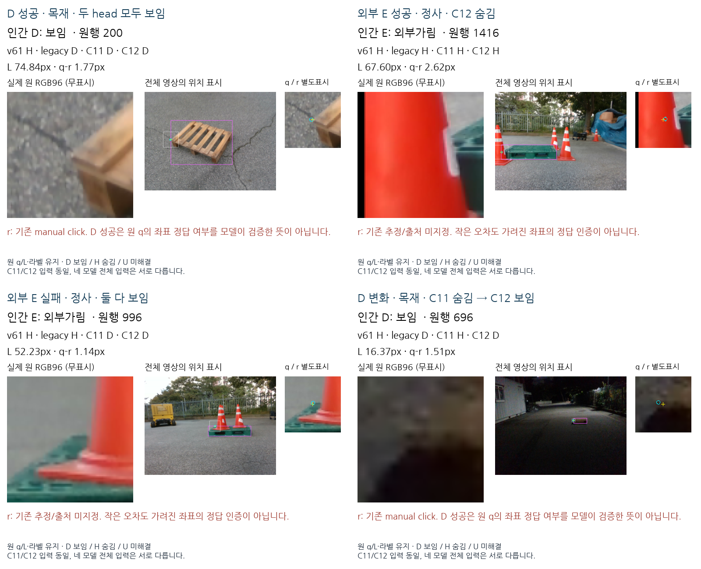
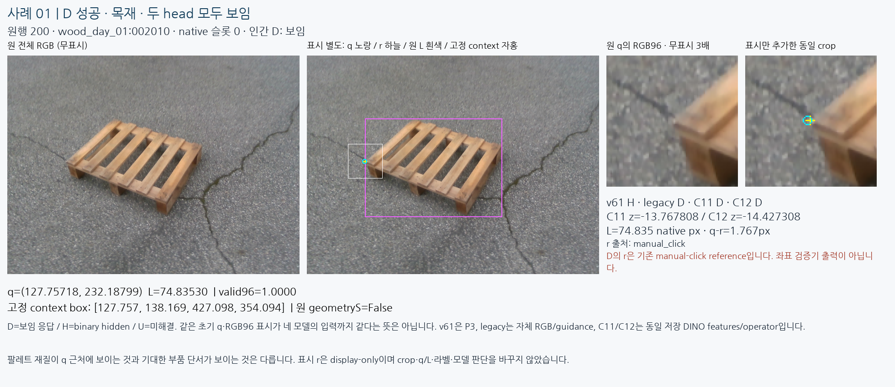
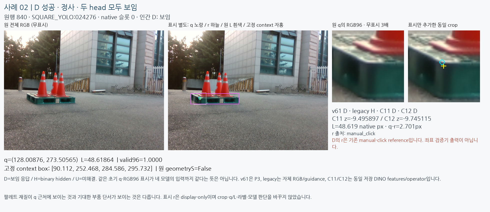
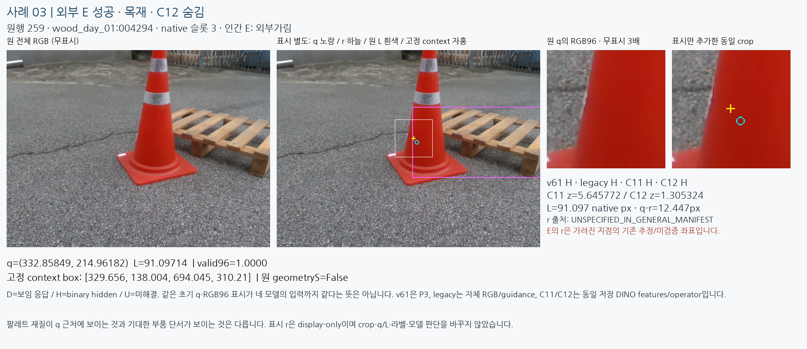
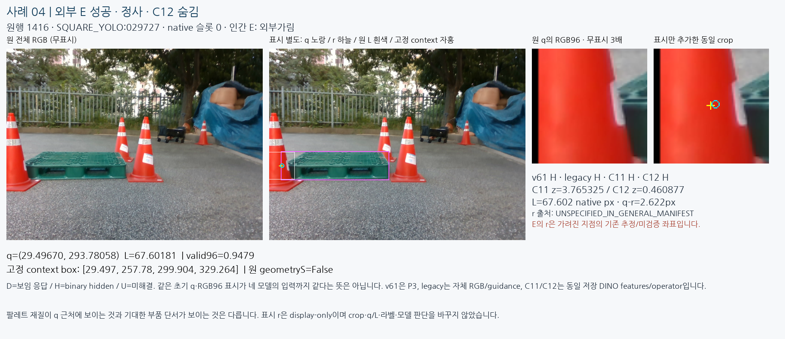
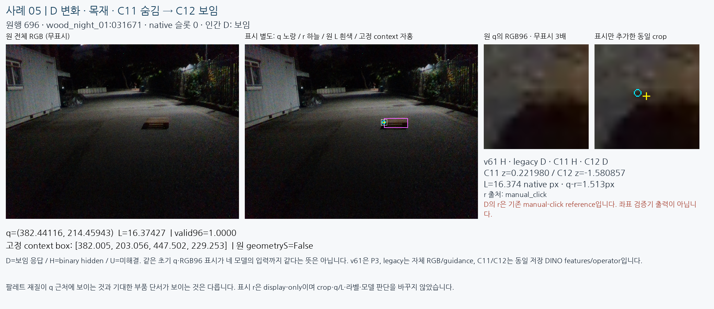
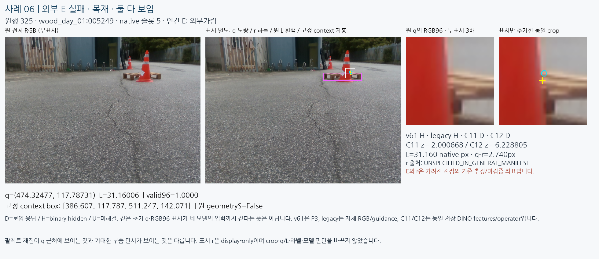
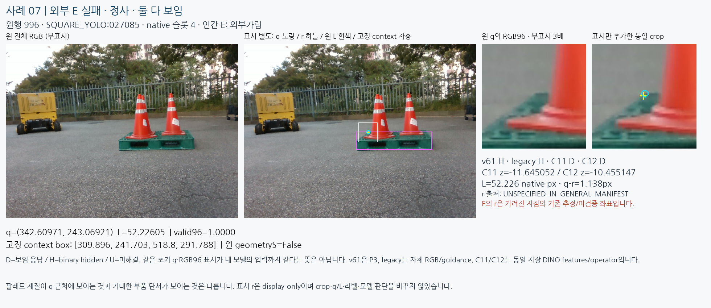
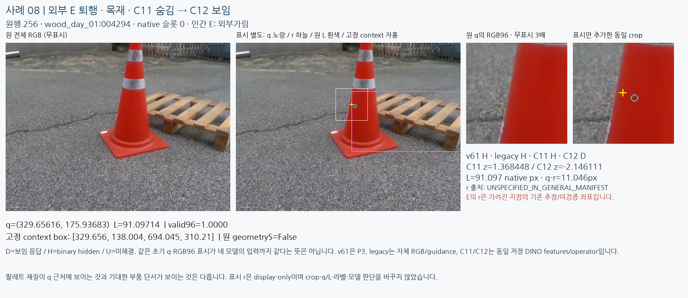
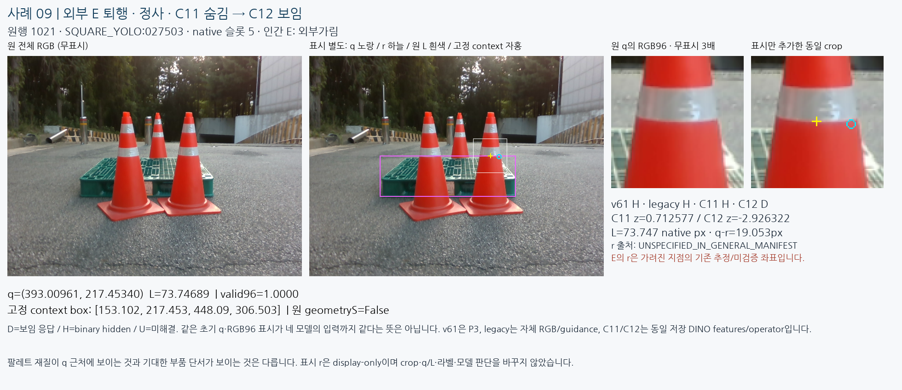

어디서 맞고, 어디서 틀렸나?
원래 질의를 그대로 둔 실제 이미지 비교
보이는 D 성공과 외부가림 E 성공을 따로 보여 주고, D를 고친 경우·외부 E를 놓친 경우·C11에서 C12로 퇴행한 경우를 함께 확인합니다. 9사례는 이미지 보기 전에 조건별 가장 앞 원행과 기존 고정행으로 잠갔습니다.
같은 초기 q와 원 RGB96을 표시해도 네 모델의 입력이 모두 같았다는 뜻은 아닙니다. v61은 P3, legacy는 자체 RGB/guidance 경로이며, C11/C12만 정확히 같은 저장 DINO features와 operator를 공유합니다. 이 페이지는 평가 진단용이지 학습·모델 선택 자료가 아닙니다.
한눈에 보는 고정4사례
D 성공 · E 성공 · E 실패 · D 변화의 순서입니다. 원 crop은 무표시이며 q/r는 별도 표시 패널에만 추가했습니다.

전체 지표와 사례의 관계
현재223프레임/1,784슬롯 전체는 그대로 유지했습니다. factual U45, 추가 U0입니다. 아래는 동일 paired D/E 코호트의 저장 지표이며, 9사례의 빈도로 전체 성능을 추정하지 않습니다.
| 그룹 / 모델 | D 정답 / 수 | E 정답 / 수 | E 정밀도 | E 재현율 | U율 |
|---|---|---|---|---|---|
| 목재 / v61 | 145/616 | 29/29 | 5.8% | 100.0% | 0.0% |
| 목재 / 실사 legacy | 448/616 | 23/29 | 26.1% | 79.3% | 16.6% |
| 목재 / C11 | 598/616 | 18/29 | 50.0% | 62.1% | 0.0% |
| 목재 / C12 | 601/616 | 8/29 | 34.8% | 27.6% | 0.0% |
| 정사 / v61 | 115/531 | 59/61 | 12.4% | 96.7% | 0.0% |
| 정사 / 실사 legacy | 207/531 | 60/61 | 19.1% | 98.4% | 11.8% |
| 정사 / C11 | 531/531 | 17/61 | 100.0% | 27.9% | 0.0% |
| 정사 / C12 | 531/531 | 6/61 | 100.0% | 9.8% | 0.0% |
가시성 판단과 좌표 정답 검증은 별개입니다. E의 기존 reference는 가려진 지점의 추정값이고 일부는 원 manifest에서 출처가 미지정입니다. 작은 q-r 오차도 정확한 위치 gold를 의미하지 않으며, 큰 오차에서 E를 맞힌 사례 역시 localization 성공은 아닙니다. 재질이 보이는 것과 기대한 부품 단서가 보이는 것도 다릅니다.
01. D 성공 · 목재 · 두 head 모두 보임
원행 200 · wood_day_01:002010 · native 슬롯0 · 인간 D: 보임 · L 74.835px · q-r 1.767px
v61 H · legacy D · C11 D · C12 D / C11 z=-13.767808, C12 z=-14.427308. D iff z<0; H iff z≥0, factual U 우선.
기존 manual-click D reference의3px 이내 부분집합입니다. 원 q의 좌표 정답 여부를 모델이 검증한 출력은 아닙니다.



02. D 성공 · 정사 · 두 head 모두 보임
원행 840 · SQUARE_YOLO:024276 · native 슬롯0 · 인간 D: 보임 · L 48.619px · q-r 2.701px
v61 D · legacy H · C11 D · C12 D / C11 z=-9.495897, C12 z=-9.745115. D iff z<0; H iff z≥0, factual U 우선.
기존 manual-click D reference의3px 이내 부분집합입니다. 원 q의 좌표 정답 여부를 모델이 검증한 출력은 아닙니다.



03. 외부 E 성공 · 목재 · C12 숨김
원행 259 · wood_day_01:004294 · native 슬롯3 · 인간 E: 외부가림 · L 91.097px · q-r 12.447px
v61 H · legacy H · C11 H · C12 H / C11 z=5.645772, C12 z=1.305324. D iff z<0; H iff z≥0, factual U 우선.
E reference: 가려진 지점의 기존 추정/미검증 r. 원 기록 출처: UNSPECIFIED_IN_GENERAL_MANIFEST. 표시 r로 새 crop을 만들거나 원 좌표를 교정하지 않았습니다. 작은 거리·보이는 주변 팔레트 재질로 해당 기대 단서의 위치나 가시성을 새로 확정하지 않습니다.



04. 외부 E 성공 · 정사 · C12 숨김
원행 1416 · SQUARE_YOLO:029727 · native 슬롯0 · 인간 E: 외부가림 · L 67.602px · q-r 2.622px
v61 H · legacy H · C11 H · C12 H / C11 z=3.765325, C12 z=0.460877. D iff z<0; H iff z≥0, factual U 우선.
E reference: 가려진 지점의 기존 추정/미검증 r. 원 기록 출처: UNSPECIFIED_IN_GENERAL_MANIFEST. 표시 r로 새 crop을 만들거나 원 좌표를 교정하지 않았습니다. 작은 거리·보이는 주변 팔레트 재질로 해당 기대 단서의 위치나 가시성을 새로 확정하지 않습니다.



05. D 변화 · 목재 · C11 숨김 → C12 보임
원행 696 · wood_night_01:031671 · native 슬롯0 · 인간 D: 보임 · L 16.374px · q-r 1.513px
v61 H · legacy D · C11 H · C12 D / C11 z=0.221980, C12 z=-1.580857. D iff z<0; H iff z≥0, factual U 우선.
기존 manual-click D reference의3px 이내 부분집합입니다. 원 q의 좌표 정답 여부를 모델이 검증한 출력은 아닙니다.



06. 외부 E 실패 · 목재 · 둘 다 보임
원행 325 · wood_day_01:005249 · native 슬롯5 · 인간 E: 외부가림 · L 31.160px · q-r 2.740px
v61 H · legacy H · C11 D · C12 D / C11 z=-2.000668, C12 z=-6.228805. D iff z<0; H iff z≥0, factual U 우선.
E reference: 가려진 지점의 기존 추정/미검증 r. 원 기록 출처: UNSPECIFIED_IN_GENERAL_MANIFEST. 표시 r로 새 crop을 만들거나 원 좌표를 교정하지 않았습니다. 작은 거리·보이는 주변 팔레트 재질로 해당 기대 단서의 위치나 가시성을 새로 확정하지 않습니다.



07. 외부 E 실패 · 정사 · 둘 다 보임
원행 996 · SQUARE_YOLO:027085 · native 슬롯4 · 인간 E: 외부가림 · L 52.226px · q-r 1.138px
v61 H · legacy H · C11 D · C12 D / C11 z=-11.645052, C12 z=-10.455147. D iff z<0; H iff z≥0, factual U 우선.
E reference: 가려진 지점의 기존 추정/미검증 r. 원 기록 출처: UNSPECIFIED_IN_GENERAL_MANIFEST. 표시 r로 새 crop을 만들거나 원 좌표를 교정하지 않았습니다. 작은 거리·보이는 주변 팔레트 재질로 해당 기대 단서의 위치나 가시성을 새로 확정하지 않습니다.



08. 외부 E 퇴행 · 목재 · C11 숨김 → C12 보임
원행 256 · wood_day_01:004294 · native 슬롯0 · 인간 E: 외부가림 · L 91.097px · q-r 11.046px
v61 H · legacy H · C11 H · C12 D / C11 z=1.368448, C12 z=-2.146111. D iff z<0; H iff z≥0, factual U 우선.
E reference: 가려진 지점의 기존 추정/미검증 r. 원 기록 출처: UNSPECIFIED_IN_GENERAL_MANIFEST. 표시 r로 새 crop을 만들거나 원 좌표를 교정하지 않았습니다. 작은 거리·보이는 주변 팔레트 재질로 해당 기대 단서의 위치나 가시성을 새로 확정하지 않습니다.



09. 외부 E 퇴행 · 정사 · C11 숨김 → C12 보임
원행 1021 · SQUARE_YOLO:027503 · native 슬롯5 · 인간 E: 외부가림 · L 73.747px · q-r 19.053px
v61 H · legacy H · C11 H · C12 D / C11 z=0.712577, C12 z=-2.926322. D iff z<0; H iff z≥0, factual U 우선.
E reference: 가려진 지점의 기존 추정/미검증 r. 원 기록 출처: UNSPECIFIED_IN_GENERAL_MANIFEST. 표시 r로 새 crop을 만들거나 원 좌표를 교정하지 않았습니다. 작은 거리·보이는 주변 팔레트 재질로 해당 기대 단서의 위치나 가시성을 새로 확정하지 않습니다.



이 사례로 말할 수 있는 범위
성공과 실패가 모두 실제로 존재합니다. 다만 이9개는 결과 조건별로 고른 진단 표본이며, 공통 모양을 원인이나 전체 빈도로 단정할 수 없습니다. 현재223자료는 과거 개발에 노출되었고 이번 그림으로 head·문턱·checkpoint·arm·학습 자료를 선택하지 않습니다.
현재 모델은 주어진 q에 대한 조건부 보임/hidden 응답을 출력합니다. 초기 좌표가 정확한지, 보이는 주변 구조가 기대한 native 부품인지까지 동시에 검증한 모델은 아닙니다. 초기 기하 self 경로도 별도이며 raw hidden은 학습된S/가림 원인 분류가 아닙니다. 이 차이를 분리해서 실제 이미지를 검토해야 합니다.
원 human GT·q/L·native순서·reference·기존 모델 출력은 바꾸지 않았습니다. 새 모델·encoder·학습·GT recrop·좌표 이동·PnP0. 전체 사례의 관찰과 목표 범위에 관한 최종 해석은 root가 원 이미지를 확인한 뒤 별도 기록합니다.